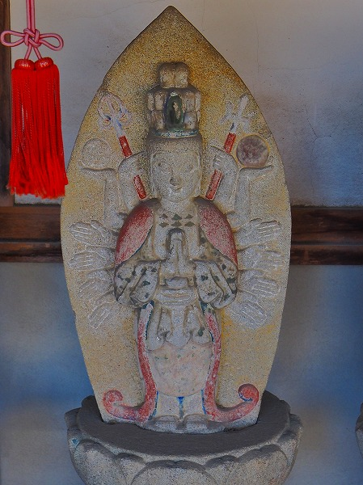
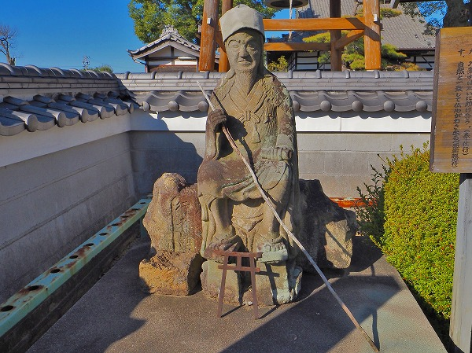
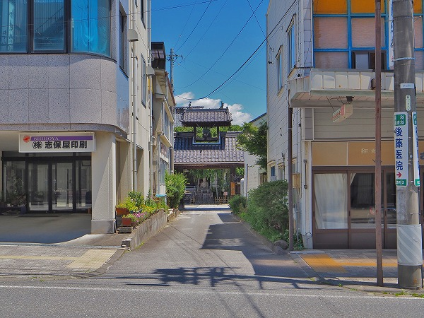

妙楽寺の墓の墓にあったコンクリ仏像群。

これらのコンクリ仏像群に出会った時点では
作者の情報などは全く分からず新たな愛知コンクリ造形師の存在を予見しただけで、雑誌
ワンダーJAPON5号に記事を寄稿した。
ところがその記事を見た複数の読者から
「このコンクリ像は高見彰七の作ではないか」というタレコミが入った。
皆さん凄い！この写真だけで作者が判るのか。
聞けば、愛知県高浜市にある吉浜人形本店の前にある観音像の作者だという。
おおお、その観音様なら以前、
紫峰人形美術館（詳しくはワンダーJAP
AN4号を参照の事）に行った際に見たぞ！
 撮影2006.11.
撮影2006.11.
うむ。確かに下膨れで細い目や衣の感じ、全体的なプロポーションなどが似ている。
という訳で、コンクリ仏界（？）でもこれまであまり話題に上らなかった高見彰七という人物をフォーカスしてみることにする。
で、ネットで高見彰七を検索すると一発で凄いサイトがヒットした。
西洋陶器を求めて ―内外の洋食器―
こちらのサイトさんに高見彰七の作品リストが
ほぼコンプリートに近い形で載っていたのだ！
しかも結構な多作で様々なジャンルのコンクリ像を手掛けていることが判明した。
てなわけで、妙楽寺訪問の1年後、高見彰七の作品に出会うべく再び愛知に出かけたのであった。
以下に紹介する高見彰七作品はほぼ西洋陶器を求めてさんが尽力されて収集した情報で、
私はそれを見てただ乗っかっただけなことを記しておきます。
というかこのレポートよりも遥かに詳しいので高見彰七について詳しく知りたい方は
西洋陶器を求めて ―内外の洋食器―を是非見て頂戴。
米野木神明社
最初に訪れたのは日進市の米野木神明社。
豊田市在住だった高見氏の作品があるエリアは
豊田市からみよし市、東郷町、日進市辺りに分布している。
今回はその北側から高見作品を見て行こう、という目論み。
神社の入口、鳥居の脇に高見氏の造った
神馬がある。
事前に入手した情報によると高見氏は数多くのコンクリ神馬を手掛けているという。
全体的に張りのある、良いプロポーションの神馬である。
昭和36年10月の作。
表情は目が小さく、キュートな感じ。
一般的に神馬の尻尾は、表現は難しいのだが、ポニーテールという言葉があるように少し跳ね上がっているのが普通かと思う。
が、ここのはだらんと垂れ下がっている。
足元にあった神馬と書かれたプレートは割れていた。悲し。
傍示本御嶽講社
次に訪れたのは御嶽教の講社。
片側2車線の交通量の多い道端にある霊場だ。
一歩、足を踏み入れると静謐な雰囲気に満ちている。
森の中に石碑が並び、その一画にコンクリ像が経っていた。
法徳霊神像というそうな。
何だか着物の袖がぴょんと跳ね上がって飛行機みたいだ。
後から見たら、ほらね。
飛行機みたいでしょ。
表情はこんな感じ。
実際の人物を模写したものなのだろうか。
頬骨がやや出ていて、妙楽寺のコンクリ仏に見られた「下膨れ＆細い目」感が薄い気がする。
袖の部分はやや摩滅していて、中の鉄骨が浮き出ている。
これは早急に保護保全をしないとゴソっといく可能性もありますぞ。
春日社
お次は東郷町の春日社。
鳥居を潜ると左側に神馬がいた。
近年ペイントされたようで、白く輝いていた。
先程の米野木神明社の神馬に比べると尻尾がキュッと曲がっていたり後ろ足が前後してたり躍動感がある。
やはりつぶらな瞳がキュート！

たてがみの表現はかなりおとなしめな印象がある。
背中に賽銭が置かれていた。何故？
三好森下交差点
西洋陶器を求めて ―内外の洋食器―さんによるとこの交差点にも観音像があったはずのなのだが…。
無くなってます。
以前あったであろう場所はコンクリで塞がれていた。
隣にあった石の地蔵だけは少し離れた場所に安置されていた。
コンクリの観音像はどこへ行ったのやら…。
三好稲荷
三好稲荷は満福寺というお寺の境内にある稲荷堂のことだ。
参道入口の大鳥居の脇に
大きな狐像があった。
チョット泣けるくらい見事なド逆光だったのでヘンなアングルの写真しかなくてゴメンなんだけど、結果高見作品の中では
一番出来が良かったように思える。
表情は結構怖いんですけど。
福田新神明社
次に訪れたのは福田新神明社。
周辺はトヨタの工場だらけで、まるで巨大な宇宙船のような建物が次から次へと現れて、日本の自動車産業の規模の大きさを改めて実感できる場所だった。
しかし神社に一歩入ると静かな雰囲気。
手水の向かいに神馬はあった。
ここの神馬は他のものと違いペイントされておらず、コンクリの生地がそのままの状態だった。
昭和31年作。
高見氏のキャリアにおいて初期の作品と言える。
たてがみはこんな感じ。
高見作品の中ではやや荒々しい感じか。
尻尾はだらんと垂れ下がっている。
お股の辺りが補修されていた。
くるぶしの部分までしっかり作ってある。
八幡宮
お次は豊田市の八幡宮。
鳥居の先に神馬がいた。
チョット頭が大きめの神馬。
全体的に四角いプロポーション。
たてがみの表現もおとなしめ。
台座に銘があった。
昭和40年10月。
秋咲きの桜が印象的だった。
田中町の観音像
豊田市田中町のマンションの一画に経つ観音像。
こちらは愛知の特殊造形作家、おいもさんのツイートから情報を頂戴した。
何の変哲もない、マンションの駐車場の一画にその観音像はあった。
赤子を抱いた子安観音像だ。
高見彰七初心者の私が判断するのもおこがましいのだが、表情から受ける印象としてはかなり
タカミー度は高いと思う。
規模としては結構大型だと思う。
駐車場の一画に佇む大きな子安観音、一体どんな経緯があったのか、気になって仕方がない。
そして抱かれた赤子が
妙にオッサン臭いのが気になった…。
八柱神社
次は豊田市街にも近い八柱神社。
とはいえ周辺は畑が広がるのんびりとした場所だった。
これまで見てきた神馬は拝殿、本殿に対して横向き、というか参道を向いているものばかりだったが、ここの神馬だけは拝殿、本殿の方を向いている。
つまり鳥居を潜ってきた参拝者に対してお尻を向ける格好になっている。何でだろう？
プロポーションは安定の高見スタイル。
昭和41年4月の作。
表情も安定の高見スタイル。
尻尾も安定の高見スタイルだった。
後ろ足の腿の二本筋も他の神馬でも見られた。
境内には何故か乃木将軍の像もあった。
路傍の象
八柱神社から東に向かっていると偶然、コンクリの象さんを発見した。
場所柄高見作品である可能性も無きにしも非ず、なので一応聞き込みを。
場所は葬祭場。
公明党のポスターがベタベタと貼ってあった。
う～む。
チョット高見作品とはテイストが違うような気がするが…
受付の方に聞いてみると、
猿投の池田さんという方が製作したそうな。
主にキリンなどの動物を手掛けているという。
んん？てことはもしかして名古屋市今池の名サウナ、ウェルビー今池店のキリンとか？
…スミマセン、私愛知の人間じゃないんでこれ以上の深掘りは無理っス。
猿投の池田さんに関しては興味のある地元の方、調査オネシャス。
受付のおばさんが「何？アンタも象作るの？」って。
イヤ、作りません…。
古瀬間御嶽山近くの観音像
再び
西洋陶器を求めて ―内外の洋食器―さん情報。
豊田市街から東に数キロ離れた観音像を訪れた。
ここは古瀬間という地名で、古瀬間御嶽山という御嶽信仰の霊場がある。
その霊場と道を一本隔てて観音像が建っているのだ。
交通安全観音像。
昭和40年7月建立。
私は個人的に高見作品の中でも観音像に着目している。
…というのも、そもそも最初に出会った高見作品が高浜の観音像だったし、高見作品を強く意識させてもらったのも冒頭に挙げた妙楽寺の観音像群だったから。
そして高見作品の中でも一番大型で、その特徴が顕著なのも観音像なのではないか、という予見めいたものもあったからだ。
御尊顔は相変わらずふにゃ～んとした表情。
この表情見てると
キモチが軽くなって来るんだよねー。
上手い下手で言えば決して上手い部類ではない。
でも昔、香港のタイガーバームガーデンで衝撃を受けた超ゆっるーい神様と一緒で、異様に親しみがあるんだよね。
そこが高見作品の最大のストロングポイントだと思う。
見る者をふにゃ～んとした気持ちにさせるマジカルな魅力があるのですよ。
真福寺
陽が傾いてきた。
本日のラストは岡崎市北部の真福寺。
豊田市街と岡崎市街の丁度中間辺りにある寺院だ。
山間部にある真福寺の入口にある山門。
ちなみに山門の扁額のフォントがスーパーカッチョイかった。
この画像では判らないだろうから興味ある人は実際に行くか何かの手立てで調べてみてちょ。
その脇に高見彰七が手掛けた観音像があった。
こちらである。
後ろまで回り込んで見てみたが銘や建立年は記されていなかった。

紅葉の木々にに埋もれる格好で建っていたので、苔が乗り表情も判別し難かったが、
何となく笑っているように見えた。
隣には小さなお堂があった。
頭が尖った三面の石像が印象的だった。これなんだっけ？
境内の案内図。
このお寺は山門のある場所と中腹のエリアと本堂があるエリアの3つのエリアに分かれている。
その中腹エリアと本堂エリアを赤い通路がジェットコースターみたいに繋がっているみたい。
高見作品を充分堪能したので、このまま帰ってもいいのだが（お腹空いたし、お風呂入りたいし、一杯やりたいし）、気になり過ぎたので行ってみることにした。
行ってみたら本当に森の中を赤い通路が延々と続いていた。
まるでキャノピーウォークのような大規模な空中歩道だった。
どこかミャンマーの回廊を思わせる素敵な回廊だった。
別ルート、というか本来の参道。
うっすら紅葉が始まっていたが、もう少ししたら境内は真っ赤になっていた事だろう。
そうなったら先程の通路を歩いたらさぞかし見事な眺めだったろうなあ。
昌福寺
高見彰七ツアー2日目。
この日も快晴に恵まれた。
昨日は日進市～東郷町～みよし市～豊田市、さらに岡崎市の北側辺りを徘徊したが、今日はその辺りよりやや南側のエリアを訪れようと思う。
最初に訪れたのは刈谷市の昌福寺。
カセットテープの基礎となる物質、フェライトの父と呼ばれる
加藤与五郎の墓があるそうです。
後で調べたらＶＨＳの父、高野鎮雄の菩提寺でもあるそうな。
凄いな、
世界二大磁気記憶媒体の二人がこのお寺の檀家だなんて。
で、本堂。
愛知のお寺って鉄骨とか鉄パイプで斜めに補強してるお堂をよく見る気がする。
そして他ではあまり見ない気がする。気のせいなのだろうか。
境内には西国三十三観音が並んでいた。

うっすら彩色もされ、精緻な石仏だった。
で、肝心の高見作品である。
門前に大きな観音像が建っていた。
嗚呼、まごう事なき高見氏の観音像だ。
サイズや手に持った蓮の花、頭上や首周りの飾り、手の組み方、そして全体の印象などが
妙楽寺の観音像に極めてよく似ている。
同じ頃に作られた観音像なのだろうか。
傍らの石碑を見るとここの住職の在職50年を記念して建てられた交通守護聖観世音菩薩というそうな。
開眼は
昭和46年8月。

傍らには役小角の石像があった。
柳池院
お次は高浜市の人形の街、吉浜の柳池院、別名吉浜善光寺へ。
真言宗が多いこのエリアでは珍しく天台宗の寺院である。
何故かお寺の周辺は騒然としていた。
聞けば吉浜の街の祭礼で交通規制が敷かれているのだという。
寺に駐車場もないので困っていると、御住職の差配で車を少しの間、停めさせてもらった。お忙しいところスミマセンでした…。
寺の入り口には三十三観音らしき石像が並んでいた。
あまり長居できない状況だったので詳細は確認してないす。スンマセン。
さらに境内には細工人形展示館なるものがあった。
吉浜は人形の街、しかもこの寺に奉納された藁細工の人形が吉浜細工人形のルーツなのだという。
今年の大河ドラマに即した展示があった。三河のヒーロー徳川家康の人形だ。
長居できないのだが、ついつい見てしまった。
で、肝心の高見作観音像。
みちびき観音という。
小品で劣化も激しかったが、高見作品の特徴をよく示しているように思える。
銘とか年号は確認できませんでした。
尼宮慈母観音
で、吉浜人形本店前の観音像へ。
隣の広場では高浜のまつりをやっていて、菊人形の展示や地元の子供たちのダンスや屋台や修復された造り物の象さんのお披露目など、結構盛り上がっていた。
で、こちらはそんな祭りをよそに観音様に謁見。
お久しぶりでございます。
説明書きによれば高見彰七翁が
「素人ながら」セメント製の観音像を製作したが
「身丈1丈にもなる大きさで安置する場所もなく」昭和38年にこの場所に迎えた、とある。
（括弧は筆者）
何か言葉の端々に
嫌々ニュアンスが感じられるのは気のせいだろうか。
それでもこうして今でも撤去することなく安置して暮れているわけだから感謝感謝でございます。

足元には2体の観音像。
右側の流れるようなポーズの観音像は古瀬間御嶽山の近くにあった交通安全観音像を思わせる。
ちなみに以前訪れた
紫峰人形美術館はとっくに無くなっていて、その向かいの
高浜茶屋吉貴という施設だけが営業していた。
紫峰人形美術館に比べれば規模は小さいが吉浜の細工人形の魅力と吉浜人形の客を楽しませようという姿勢は健在なので、是非訪れていただきたい。
紫峰人形美術館の様子は
ワンダーJAPAN5号を高浜茶屋吉貴の様子は
ワンダーJAPON5号を御覧くださいませ。
妙楽寺
で、高見彰七作品を巡る旅のフィナーレとして改めて妙楽寺を訪問してみた。
初見では判らなかった高見彰七という作者の作品を見て回った上で改めてこの観音像群の作風や特徴をチェックしようという目論み。
やはり、この2日で観てきた作品群とかなりの共通点がある事を確認。
そしてこれだけ大量の高見作品が集まっているのはやはりココなのだ、という事が再確認できた。
事情はあるにせよ、
この場所が高見作品が最も多く見られる聖地と言って間違いないだろう。
で、この後、住職さんに話を聞いたのだが、お寺サイドとしては
高見彰七氏の存在は把握していなかった。
ただ、件のコンクリ像の来歴は御存じだった。
それによると三好の篤志家のナントカさん（スミマセン、そっちは私がノーチェックだったので名前を忘れました！）が高見氏に造らせた
交通安全を祈願する観音だったという。
妙楽寺の近くの豊田市岩倉の路傍にこれらのコンクリ像は並んでいたのだそうな。
その後、道路拡張によってそれらの観音像は近在の寺院に移転したのだが、今度は
その寺院自体が廃業してしまい、妙楽寺で引き取ったのだという。
お寺自体が消滅するとは、何ともハードな時代になったものだ。
一応、新しく出来たエリアを廻っていると、その一画に新入りの観音像が。
あれ？コレって
三好森下の交差点に建っていた観音様じゃないの？
何らかの理由でこっちに引っ越してきたんですね。
てっきり棄てられたのかと思っていたが、ここで第二の人（？）生を過ごすんですな。
お疲れ様でした…。
かくして妙楽寺に高見作品がもう一体加わる事になった。
帰りに、交通安全観音があったとされる豊田市岩倉を車で流してみたが、これと言った痕跡は発見できませんでした。
…という訳で愛知県での高見彰七巡りの旅は終了。
愛知県でコンクリ仏師というと浅野祥雲氏を筆頭に様々な人物の名が浮かぶが、豊田エリアでも
高見彰七氏という人物が昭和30～40年代に活躍していたのだ、という事を身をもって実感できた。
多彩な愛知コンクリ仏師列伝に新たな1ページが刻まれた事をここに宣言させていただきます（いや、私の手柄じゃないですけどね）。
三河からは以上です。
さて。
興奮の愛知県高見彰七ツアーから約半年後。
私は
長野県飯田市にいた。
何故飯田市にいるのか、と言えば話は半年前に遡る。
高見彰七というワードでサーチをした際にもうひとつのサイトがヒットしたのだ。
まるかど日記
サイトの文面からすると私も好きな春夏秋冬叢書の雑誌「そう」のライターさんなのだろうか。
その中の記事で
飯田市に高見彰七氏のコンクリ仏が2体あるというのだ。
前回の高見作品巡礼ですっかりファンになってしまった私。
これは行かないわけには行かないでしょう！行くでしょう！
で、飯田です。2体のコンクリ仏を目指して。
専照寺
最初に訪れたのは専照寺。
飯田市は長野県南部を代表する商業都市だ。
この街を語る上で忘れてはならないのは昭和22年にあった飯田大火。
この大火災によって旧市街の大半が消失してしまったのだ。
そのため、飯田の街には古い建物がほとんど存在しないのである。
そんな飯田の街にも寺町は存在する。
数件の寺院が集まって寺町を形成しているのだ。
そのひとつ、専照寺。

商店街の小道の突き当りに山門が見える。
門の上が鐘楼になっている珍しいタイプ。
その門の奥に…おりました！
枝垂桜の下に
お釈迦様が座っておられた。
樹の下ゆえ若干苔が乗っているが、顔の状態は良い。
御顔は
安定の高見テイスト。
寝てるような笑ってるような、どっちに転んでも良い方に取れるような表情をしている。
これは技術の上手い下手ではなく、
作者のマインドの問題なんだと思う。
だからきっと高見氏が不動明王を造ったとしても全然怖くない不動明王が出来ると思うな。

住職さんがいらっしゃったので話を伺った。
このお釈迦さまは檀家さんが寄贈したもので、作者については何も判らないとの事。
台座の正面に癖の強い字で釋迦如来とあった。
裏書きによると
昭和36年3月に建立。
市内に住む
今泉さんという方が奉納した事が記されてあった。
そして作者の高見彰七氏の名前も刻まれていた。
来迎寺
同じく飯田市の寺町にある来迎寺。
何か赤い車がメインっぽい感じになってしまったが、本堂前の駐車場の一画に建っているので勘弁してくれ。
見事なS字型のポーズ。
古瀬間御嶽山の交通安全観音と似ているがこちらの方がよりS字が強く、躍動感に溢れている。
後から見ると不自然なまでにS字ってるのがお判りいただけると思う。
台座の正面には聖観世音の額字が。
あれ？これさっきの専照寺のお釈迦さまと同じ人が書いてるよね？ね？
さらに台座の裏には専照寺のお釈迦さま同様、裏書が石に刻まれていた。
いわく
献奉
昭和三十五年四月吉日
飯田市松尾町一丁目
今泉一峯居士
白雲山十七？静誉代
謹作豐田市高見彰七
とあった（これも専照寺と一緒）。
さらに台座脇には趣意書きまであった。
それによるとこの観音像を奉納したのは
今泉許太郎という人物。
（裏書の今泉一峯居士というのは戒名なのだろうか）
幼いころは病弱だった今泉氏、母につれられてこの寺の観音様を祈願して健康になったそうな。
成人し、報恩のために
昭和35年に観音像を建立し、寄贈した、とあった。
そこで自然と浮かんできた疑問。
何故長野の飯田に高見作品があるのか？
元々、このエリアは三遠南信といい、東三河（豊橋）、遠州（浜松）、南信州（飯田）と県を超えた繋がりが強い地域。
なので、豊田市在住の高見氏に仕事が回って来てもおかしくはないかも知れないが、高見作品の分布域を考えると違和感は拭いきれない。
だって、豊田、日進、東郷、みよし、岡崎、刈谷、高浜で飯田ですよ（この辺りの地理に詳しくない人、スミマセン）。
どう考えても不自然じゃないですか？
いや、逆に福崎日精とか浅野祥雲とかが手掛けているならまだ判るんです（判らない人は自分で調べて。今忙しいからっ！）。
いわば豊田のローカルコンクリ仏師が県を超えて長野県の飯田市で仕事をするとか、にわかには信じ難いんですけど。
で、来迎寺の御住職にお話を伺う事にした。
御住職は私と同年代の方で昭和35年建立の観音像に比べるとヤング世代(笑)なので建立当時の事は判らない、としながらも、遠方から現れた得体の知れない人間（私ね）のために色々と伝手を探してくれた。
その中で当時の様子を知る人物から貴重な情報を得ることが出来た。
それによると、この観音像を建立した人物である今泉氏には二人の幼なじみがいたという。
一人は
日夏耿之助。もう一人は
長坂ためぞう（電話での会話ゆえ漢字は不明）という人物。
日夏耿之助は飯田市出身の明治の詩人にして英文学者。
一方、長坂氏は…調べてみると地元の大手建設会社の社長を務めていた人物で、長坂助三郎という人らしい。
彼は父の名を襲名し、二代目長坂民蔵と名乗ったらしい（
三六組㏋より）。
つまり長坂ためぞうというのは二代目
長坂民蔵の事だろう。どちらも明治23年生まれだし。
ここからは若干の想像を交えてセミドキュメンタリー風に話を進めさせていただきます。
昭和３５年、観音像を建立、奉納しようと考えた今泉許太郎氏、明治23年生まれという事は当時７０才。
まずは仏師を探さなくてはならない。
そこで小学校の同級生である長坂民蔵（助三郎）に話を持ち掛けた、と思われる。
長坂民蔵は幅広い仕事上のコネクションから豊田市のコンクリ造形師である高見彰七を紹介する。
長坂の紹介を受けた高見は聖観音像を製作し、来迎寺に納める。
その際、扁額の字をやはり小学校時代の同級生であり、当時脳溢血により飯田に帰郷していた日夏耿之助に頼んだ。
…というストーリーが浮かび上がって来る。
つまり高見氏の名声が飯田にまで及んだというよりは長坂氏の仕事の範囲が広かった、という辺りが真相と思われる。
ちなみにこの観音像の評判が良かったので、翌年、今泉氏の旦那寺である専照寺にもお釈迦様を建立したという。
その他、御住職からは滅茶苦茶面白いハナシを色々と伺ったのだが、今回の高見氏の話とは直接関係ないので割愛させていただく。
今泉氏が祈願した秘仏飯田観音の由来とか本堂にあるもうひとつの超レア仏像の話とか。大火後の寺町の変遷とか。
もしかしたらこの来迎寺だけで追々レポートさせてもらうかもしれない程のマル秘エピソード満載の楽しいお話をたんまりと聞かせていただいた。
本当に感謝感激です。
その後、飯田市博物館に寄ったら別館として
日夏耿之助記念館があった（ちなみにその隣は
柳田国男館！）。
展示を見てみたら明治文学に疎い私でもチョットビビるほど偉い人でした…。
東京で活躍した戦前期の文学界の巨匠、地元最大手のゼネコン社長、病弱だったが観音像を寄贈できる程には成功した（であろう）人物…
70才のオジイ達3人がそれぞれ紆余曲折の人生を過ごした末、
小学校時代の友情パワーで生み出した観音像だったのだ。
そう考えたら感動するしかないでしょ！
改めて観音像を眺めてみる。
最初訪れた時は太陽が真上にあり、顔が影っていたのだが、すっかり話し込んでしまったので陽がやや傾き、イイ感じに顔に光が当たっていた。
見ている者から余計な力を抜いてくれる表情だ。
高見作品の真骨頂と言えるかもしれない。
以上で1年半に亘る高見彰七の旅はひとまず終了。
西洋陶器を求めて ―内外の洋食器―さんによると高見作品は他にもあるようなので、これからも個人的に追い続けてみたいと思っております。
…と、言ったところでとりあえず一旦〆させて頂きます。